18. Logotip Exmouth Fish Cogyo.¶
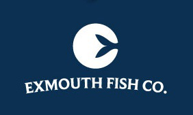
; BR |
Obrim un nou document amb Inkscape.
; BR |
Al `` Fitxer ... Propietats del document ... `` Dins de la pestanya Grid Afegim una nova graella rectangular al document i canvieu els paràmetres següents.
Unitats de quadrícules en mil·límetres.
X i espaiar -se i en 1 mil·límetre.
Línia primària cada 4.
Neix activada, visible i ajusteu -vos només a les línies de quadrícules visibles.
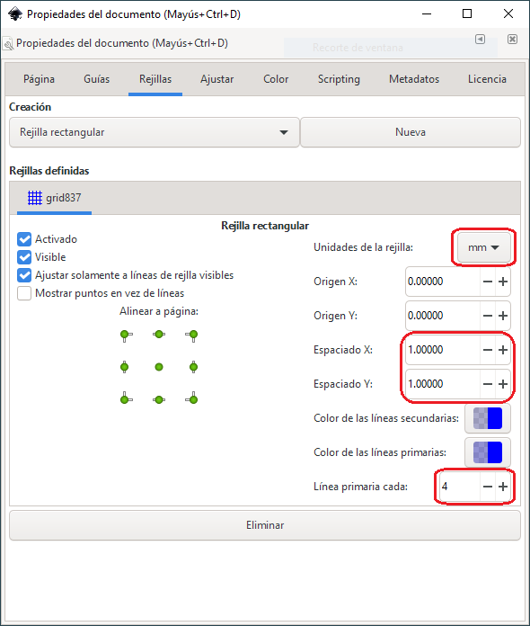
Quan acabem, tanquem la finestra i veiem una graella rectangular al nou document Inkscape.
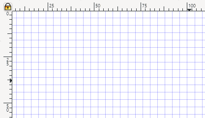
Aquest bastidor ens ajudarà a dibuixar els punts simètricament.
; BR |
Per tal que el bastidor funcioni, hem d’assegurar -nos d’activar el botó corresponent a la barra d’eines dreta.
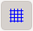
A continuació, dibuixarem un cercle vermell transparent d’un diàmetre de 8 quadrats de xarxa (32 mil·límetres).
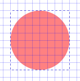
; BR |
Per continuar dibuixant amb l'eina per dibuixar recte i corbes | Botons-Lines | La següent figura tancada similar a una cua de peix. No ens preocupem gaire per la posició dels punts, que situarem més endavant al seu lloc.
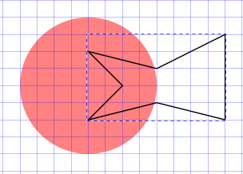
; BR |
Ampliem la figura i amb l’eina per editar els nodes | Botó-edit-nodes | Col·loquem els punts de la cua de peix al seu lloc mentre mostra la imatge següent.
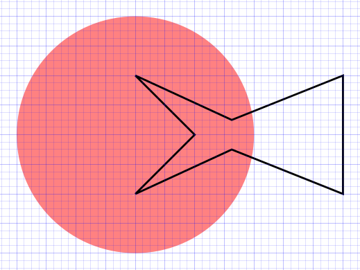
; BR |
Ara és necessari corba les línies per aconseguir l'efecte de la cua de peix. Per fer -ho, seleccionem els dos nodes de l’esquerra i feu clic al botó de suavització nodes seleccionats i, a continuació, al botó de la cantonada els nodes seleccionats.
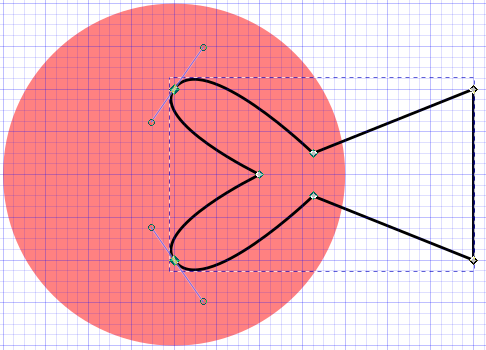
Movem els tiradors per adaptar -se a la posició mostrada per la figura següent.
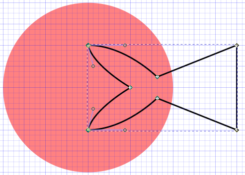
; BR |
Continuem suavitzant les línies corresponents als nodes centrals. Aquesta vegada seleccionem els dos nodes i feu clic al botó simètric de nodes seleccionats i tindrem el següent dibuix.
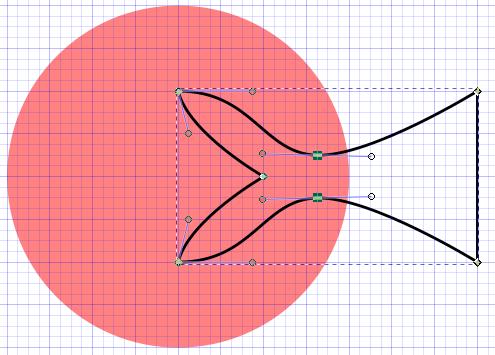
Movem els tiradors per ajustar el dibuix.
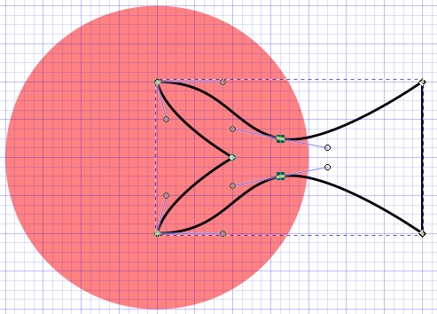
; BR |
Per acabar de dibuixar la cua de peix, seleccionem el node central, ens suavitzem i el convertim a la cantonada. Ajustem els tiradors com es mostra a la figura i hem acabat la cua de peix amb un dibuix simètric.
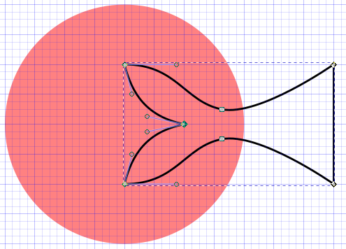
; BR |
Copieu el logotip de l’inici d’aquesta pàgina a Inkscape per copiar el color de la part inferior del logotip a la cua de peix. També traurem la vora negra.
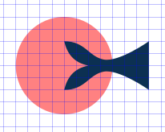
; BR |
Dibuixem un rectangle de 136 mil·límetres d’amplada per 80 mil·límetres d’alçada. Movem el rectangle al fons amb l’objecte `` ... baixem al fons '' i el col·loquen darrere dels dibuixos anteriors.
Ara podem canviar el color del cercle al blanc sense transparència.
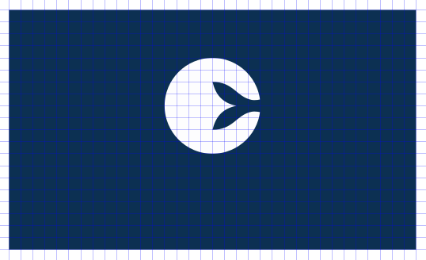
; BR |
Per continuar, escriurem el text "Exmouth Fish co. " En color blanc mida 28 punts i tipus de lletra de Geòrgia. Ara per ara no intentarem fer el tipus de lletra que es veu.
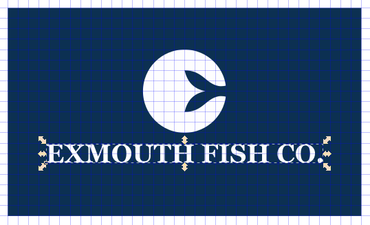
; BR |
Per corba les lletres, hem de dibuixar un viatge amb l’eina per dibuixar línies i corbes | Botons-Lines | i després corba el punt central.
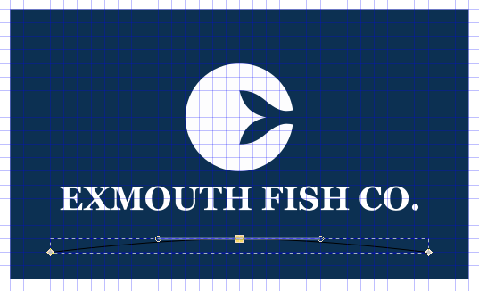
Desplacem la línia corba al centre i la pugem a la tercera marca de la xarxa des de baix.
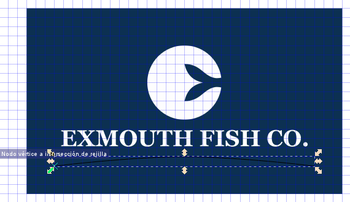
; BR |
Ara seleccionem el text i la línia corbada i seleccionem l'eina del menú `` text ... Poseu -ho en un camí '' '
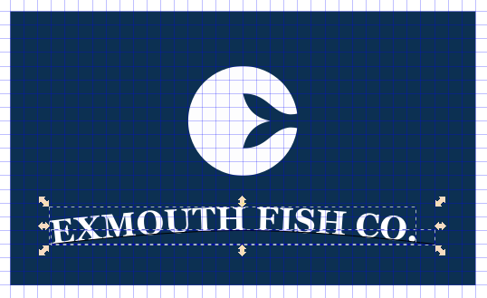
; BR |
El text no es troba exactament al centre de la línia. Per passar a la dreta, seleccionem el text amb l'eina de text | Text de botons | i poseu el cursor abans de la primera lletra "e ". Ara podem prémer el cursor ** alt + dret ** per moure el text a la dreta a la posició desitjada al centre de la línia.
Amb la combinació de tecles ** Alt + cursor anterior ** podem moure el text cap amunt i tal com es mostra la imatge.
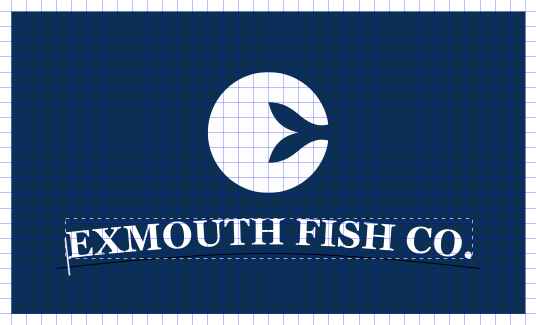
; BR |
Finalment, només seleccionem la línia corba inferior i la movem a la part inferior amb el menú `` Object ... baixem al fons '' perquè no ho pugueu veure.
Al `` Fitxer ... Propietats del document ... `` dins de la pestanya Grilles eliminem la visualització del bastidor i ja tenim el logotip acabat.
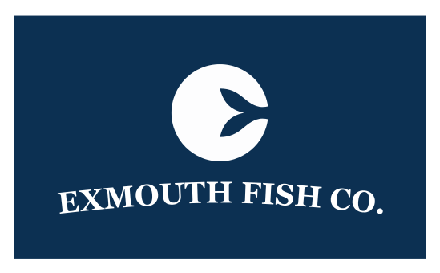